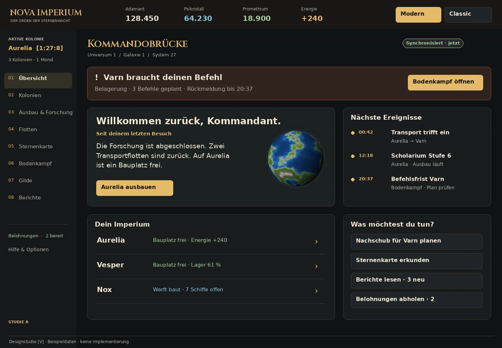

Vier Richtungen, dieselbe Welt. Vergleiche die imperiale Brücke, den Sektor-Atlas, das Operationsdeck und die Imperiums-Chronik. Originale Nova-Icons und Planetentexturen verbinden Karte, Ausbau und Bodenkampf.
Designstudien [V] mit Beispieldaten. Die Schalter vergleichen Illustrationen. Das ist keine spielbare Umsetzung. Konzept, Recherche und Experimente

Bild in voller Größe öffnen · Alle vier Richtungen nebeneinander